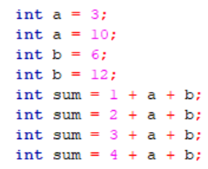
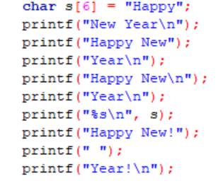

Знакомство со средой программирования. Разработка, отладка и выполнение простейшей программы
Выполнить задания (см. ниже). Файлы с выполненными заданиями сохранять в личной папке в каталоге pr2. Имена файлов указаны в заданиях (см. ниже).
Оформить в MS Word отчет о практической работе, включающий:
Отчет распечатать и представить при защите ПР.
Задания
Задание 1. Ознакомиться со средой программирования Code::Blocks.
- Запустите среду программирования Code::Blocks.
- Создайте новый проект. Сохраните его с именем
task1 в папке pr1_1.
- Внимательно ознакомьтесь с составом главного меню и панелей инструментов.
- Откройте файл
main.c. Выполните компиляцию и прогон программы. В дальнейшем выполняйте компиляцию и прогон после каждого изменения и, при необходимости, исправляйте ошибки.
- C помощью функции
printf() выведите свою фамилию, имя, отчество на латинице.
- C помощью функции
printf() выведите свою фамилию, имя, отчество на русском. Что получилось? Локализуйте кириллицу в консоли и выведите информацию корректно.
- Объявите целочисленную переменную
x. Присвойте ей значение 5. Выведите в консоли с помощью функции printf().
- Инициализируйте переменную
у значением 2.
- Попробуйте вывести сумму, произведение, разность и частное этих переменных, каждое в отдельной строке. Что получилось?
- Дополните вывод поясняющим текстом. Например, чтобы получилось "Сумма x и y равна ...(тут рассчетное значение)". Или просто "x + у = ...". Пробелы при выводе тоже учитывать.
- Доведите версию программы до идеального состояния (логично, корректно и красиво). Вот её-то вместе с результатами и надо поместить в отчет.
- Сохраните проект и закройте.
Задание 2. Есть фрагмент программного кода:

Необходимо:
- Закомментировать некоторые строки так, чтобы программа компилировалась без ошибок.
- Получить в результате значение sum = 12.
- Вывести значения переменных и расчётную сумму.
Задание выполнять в файле main.c, в проекте с именем task1_2, сохраненном в папке pr1_2.
Задание 3. Есть фрагмент программного кода:

Необходимо:
- Закомментировать некоторые строки так, чтобы программа компилировалась без ошибок.
- Получить в консоли строку "Happy New Year!"
Задание выполнять в файле main.c, в проекте с именем task1_3, сохраненном в папке pr1_3.
Вы полностью закончили практическую работу № 2? И показали выполненные задания преподавателю?
Поздравляю! У Вас есть шанс успеть оформить работу прямо сейчас, а дома только распечатать. Приступайте!
Контрольные вопросы
- Что означает #include?
- Какой заголовочный файл содержит локальные культуры?
- Что означает int main(void)?
- Какая функция локализует кириллицу в консоли?
- Чем объявление переменной отличается от инициализации?
- Спецификатор вывода целого числа.
- Спецификатор вывода вещественного числа.
- Как выполнить в ходе вывода перевод на новую строку?
Теория